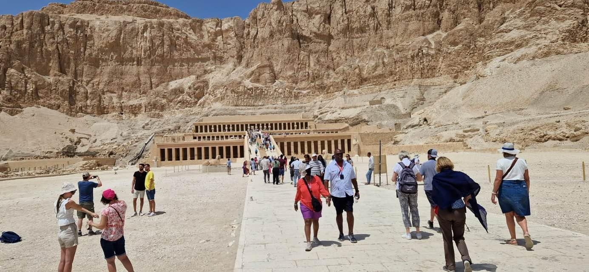

-

Wycieczka do Doliny Królów z Marsa Alam
świątynię Hatszepsut, Doliny Królów , Kolosy Memnona , świątynie karnaku
Cena od osoby dorosłej $75
-

stare miasto i zakupy w el quseir
Spędź niesamowity dzień w Elqusier i kup tanio. zakupy
Cena od osoby dorosłej $10
-
Port Galib
Spędź niesamowity wieczór w Porto Galib
Cena od osoby dorosłej $10
-
Quady z Marsa Alam – Safari z wiełbłądami i wioską beduińską
Cena od osoby dorosłej single 30$ double 50$
-
Kairu
Wycieczka do Kairu - 1 dzień z Marsa Alam
Cena od osoby dorosłej $75
-
PRYWATNE TRANSFERY LOTNISKOWE W EGIPCIE
taksówka i karta internetowa i antinal z lotniska Marsa Alam do dowolnego hotelu 10$ za osobę
SkyOnta Tours - biuro podróży w Egipcie Wycieczki fakultatywne z Hurghady i Marsa Alam po polsku


.jpg)
.jpg)
Marsa alam- Wycieczki fakultatywne
Wycieczki fakultatywne z Marsa Alam, Port Ghalib, El Quseir
Wybierając się na wakacje do Marsa Alam, Port Ghalib czy El Quseir warto zapoznać się z ofertą wycieczek fakultatywnych. Niestety hotele w Marsa Alam i okolicy zą zwykle bardzo od siebie oddalone, więc poza hotelem nie bardzo jest gdzie się wybrać na własną rękę. Z pomocą przychodzą wycieczki fakultatywne z Marsa Alam po polsku. Z naszym biurem możesz zwiedzić Kair, Luksor, popływać z żółwiami i delfinami oraz dugongami, zanurkować z akwalungiem czy pojeździć na quadach.
Marsa Alam to przede wszystkim piękne rafy koralowe. Większość osób, które wybierają tę lokalizację na wakacje w Egipcie kieruje się właśnie podwodnym światem. Często rafy koralowe położone są przy hotelach i snurkując czy nurkując z hotelowej plaży możecie podziwiać kolorowe, tętniące życiem koralowce, egzotyczne ryby, a nawet żołwie, delfiny, czy krowy morskie, co na przykład często ma miejsce przy hotelach Malikia czy Hilton Nubia w Zatoce Abu Dabbab, ale też na rejsach np. na rejsie do Marsa Mubarak.
Przebywając na wakacjach w Marsa Alam macie też szansę by zwiedzić zabytki Starożytnego Egiptu. Zarówno piramdy w Kairze, jak i świątynie w Luksorze, stoją przed Was otworem. Wprawdzie wycieczki do Kairu czy Luksoru z Hurghady są tańsze i krótsze, ale z Marsa Alam też jest możliwość pojechania w oba te miejsca.
O czym należy pamiętać decydując na którą wycieczkę chcecie się wybrać
Jeśli interesują Was rejsy morskie warto wiedzieć, że na rejs do Marsa Mubarak wypływamy z Port Ghalib, a na rejs na Wyspy Qulaan – Egipskie Malediwy czy Satayę – Dom Delfinów z portu w Hamacie, który znajduje się około 110km na południe od Marsa Alam. Na rejsy morskie z Marsa Alam zawsze proszę zabierać kserokopię paszportu wszystkich uczestników wycieczki.
Dobrze pamiętać, że z Marsa Alam do Luksoru jest znacznie bliżej niż do Kairu. Zależnie od hotelu na wycieczkę do Luksoru odbieramy Was między 3:00 a 5:00 rano, zaś na wycieczkę do Kairu między 21:00 a 23:00 poprzedniego dnia. W Luksorze jesteście ok 9:30 rano, w Kairze ok 8:30 rano. Wybierając opcję dwudniową możecie zobaczyć zarówno Luksor z Doliną Królów, jak i Muzeum Egipskie w Kairze, piramidy oraz Sfinksa w Gizie jednocześnie skracając czas spędzony w podróży, bo po wycieczce do Kairu wracacie do Hurghady (około północy), skąd następnego dnia rano (ok 4:00-4:30) odbieramy Was na wycieczkę do Luksoru.
Na wycieczki do Kairu i Luksoru, dzień wcześniej powinniście zamówić w hotelowej recepcji suchy prowiant na wycieczkę, czyli tzw. breakfast box. Czasem te breakfast boxy są bardzo skromne, więc warto wziąć coś jeszcze z kolacji (np banany, rogaliki). Na każdej z wycieczek napoje są dodatkowo płatne, więc dobrze mieć ze sobą choć butelkę wody.
Jak i kiedy rezerwować wycieczki z Marsa Alam
Najlepiej wycieczki wstępnie rezerwować przed przylotem do Egiptu. z tygodniowym bądź dwutygodniowym wyprzedzeniem. Najszybszą drogą kontaktu jest WhatsApp i messanger , ale można też napisać do nas maila. W wiadomości proszę zawrzeć informację jakiego typu wycieczki Was interesują, w jakim będziecie hotelu, ile osób jest zainteresowanych (z podziałem na dzieci do 6lat, dzieci w wieku 6-12lat i osoby powyżej 12lat